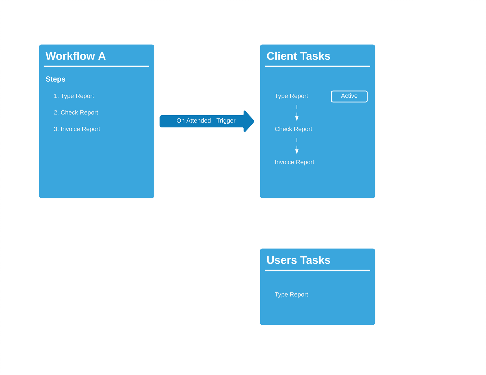
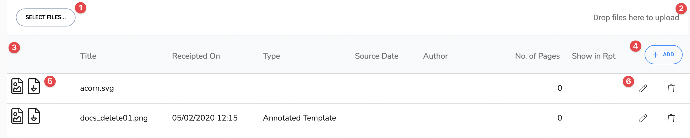
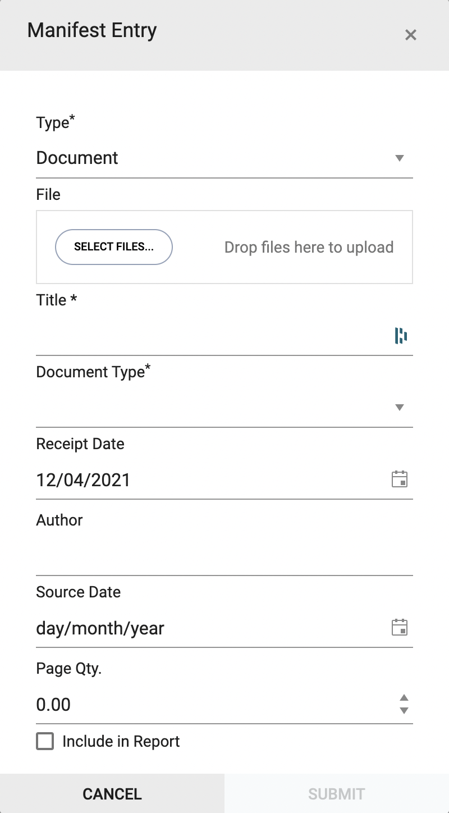
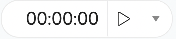

Workflows
Workflows are a list of actions or steps that are used to create active tasks for users or automate tasks for the system.
Workflows are a list of actions or steps that can do various things. When a workflow is activated it will create a number of chained tasks. When one task is completed the next becomes active. You can activate a workflow manually or automatically from an trigger event (e.g. When an appointment is created).
A workflow creates tasks that can either be assigned to a user or to a bot (a piece of code that runs a task automatically). Tasks can either be a normal task (e.g. Write report), a question (e.g. Do you want to charge for the DNA?) or system activity (e.g. email client a standard email).
When a series of tasks are created then the first one is set as active. This means that this task is available for the user to complete. When this task is completed then the next one in the series is then set to active.
Steps
The steps of the task can do other things than just create a task. They can run jobs (e.g. sending an email), ask questions and run other workflows. There are 4 types of workflow step:
- Task - This creates a task that can be assigned to a user or bot. It can also have system actions that can run when the task is completed.
- Question - This creates a special task that asks the user (not available to bots) a Yes/No Question. The result will decide whether a new workflow is run to create tasks or to continue along with the same task chain
- If...then - This is similar to above except only bots are allowed to complete, which they do on activation of the task. They use a system field to decide which route to take.
- Run Workflow - This will automatically start a new workflow to activate.
Example
To illustrate I am going to use the example of an appointment that has a status of 'Did Not Attend'(DNA). When the appointment was set to DNA the clinician was asked whether they want to create the tasks from the on DNA workflow.

The workflow has 1 step in it which creates a 'Question Task'. The Yes response activates workflow A and the No response activates workflow B.
Clients Tasks current 1 Task:
- Do you want to charge a DNA? [Question]
If the clinician responds No to the question then workflow B would be activated and the tasks would look like this:
- Do you want to charge a DNA? [Question - NO] [COMPLETE]
If the clinician responds Yes to the question then workflow A would be activated and the new tasks would look like this:
- Do you want to charge a DNA? [Question - YES] [COMPLETE]
- Invoice for DNA. [Task]
What is a Trigger?
A trigger is an event that occurs. An example of this is when you create an appointment. When you click to save the appointment, the event of saving an appointment has occurred. In inClinic it is described as the appointment 'on create' trigger.
The trigger can be used to run a workflow when it occurs. So to follow the example above, when the appointment is saved it triggers the activation of the workflow that sends an email out to the client to confirm the appointment.
In settings, under the company section is the tab for triggers. These are the default triggers for inClinic.
Appointment Triggers
In settings, under the company section is the tab for triggers. These are the default triggers for inClinic and can be over ridden if there are values set in the appointment type settings.
There are currently four types of appointment triggers:
- On Create - Activated when the appointment is saved.
- On Change - When a current appointment is updated.
- On Attend - When the clinician sets the appointment status to attended.
- On DNA - When the clinician sets the appointment status to did not attend.
Appointment Type Triggers
In Settings, under the appointment types, select an appointment type and then look at the triggers tab.
As described above it contains appointment triggers. If these are added then they will take precedents over the default ones set in the company settings.
Related Links
Documents
The document tab lists all the documents that have been uploaded into inClinic or a reference to an external file for this area. These can be the documents required by the administrator to write up the draft report or any other type of document depending on where this feature is.
| Number | Label | Description |
|---|---|---|
| 1 | SELECT FILES... | Click here to upload files in bulk. |
| 2 | Drop files here to upload | The whole of the toolbar can be used to drag and drop single or bulk files to upload them. |
| 3 | Header | Column labels for the document records |
| 4 | Add | Add a new document record. |
| 5 | File type. Shows a different icon depending the file. | |
| 5 | Click here to download the file. | |
| 6 | Edit the file record | |
| 6 | Delete the file record |
How To...
Upload files
Click on the Select Files... button and navigate to the file and click open or drag files to the top bar. The new document will be uploaded and added to the bottom of the list. This will create a basic record so will need editing to fill extra information.
Add a Document Record
Edit a Document Record
Download files
Click on the download icon to the right of the document list
Depending on how your computer or browser is configured this will either, open directly in your preferred software, be downloaded to your downloads folder for you to retreive or prompt you to save or open the file.
Delete a File
Click on the delete icon and a pop up will ask "Are you sure you want to delete this file?".Click on yes to delete or no to cancel the request
Timers
The timer function is there to record the time taken against an appointment or task.
There are three main areas:
- The timer display: showing hours and minutes.
- The play or start button
- The dropdown button at the end.
The drop down has three options:
| Save Task Duration | This will save the current duration to the task |
| Reset Duration | Reset the timer to zero |
| Edit Task Duration | Enables you to manually enter the duration. |
Running the Timer
How to activate the timer click the start button. It will activate the timer, show and indicator to show its running and the button will change to a pause button. Click the pause button and the timer will pause and the button icon will change to play again and so on.
Saving the duration
The duration will be saved when the task is completed, or you manually save it using the drop down.
Editing the duration
Using the drop down select the Edit Task Duration. This will change the display to an input. You can either manually type the duration in or click on the clock to enable easy entry. When you are ready then click the tick to update the duration or cancel to ignore your changes.
Date Calculations
This is used in a few areas of inClinic and relates to working out a second date automatically. It is used for example in the due date for an invoice
| Code | Description |
|---|---|
| E | End - calculates the end of the period |
| D | Day |
| M | Month |
| Y | Year |
| + | Add a period of time |
| - | Subtract a period of time |
Examples
These are all based from calculating from 11/09/2019.
| Code | Result |
|---|---|
| EM | 30/09/2019 |
| +2D | 13/09/2019 |
| -1M | 11/08/2019 |
| +1Y | 11/09/2020 |
| EM+2D | 02/10/2019 |